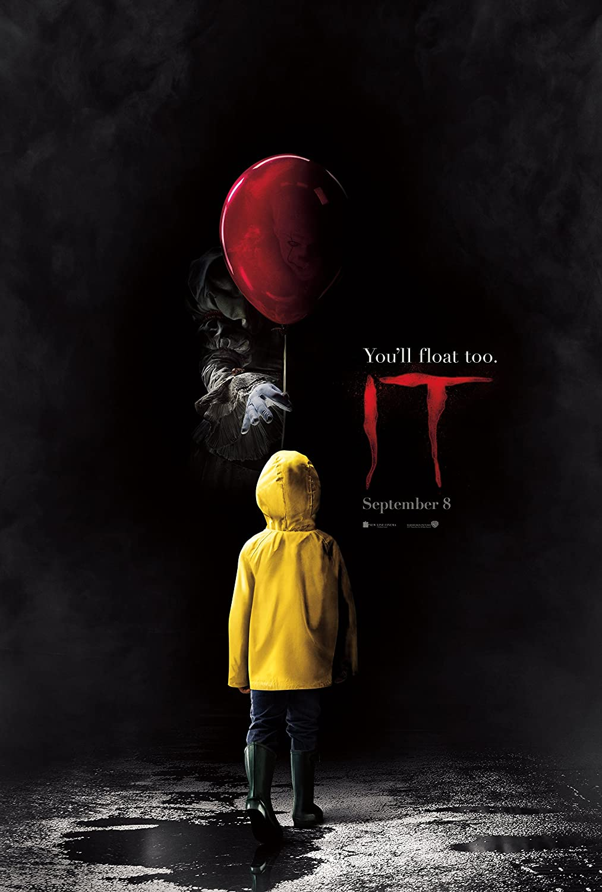
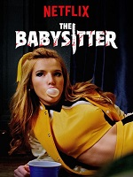

The film follows a boy with a rare autoimmune disease who is taken by his parents to a private medical facility to be cured and suddenly begins to experience paranormal occurrences. Eli was produced by Paramount Pictures, Paramount Players, MTV Films, Intrepid Pictures and Bellevue Productions and was released on October 18, 2019, by Netflix, making it the first film from Paramount Players to not receive a theatrical release.
Stars: Charlie Shotwell / Eli --- Sadie Sink / Haley --- Max Martini / Paul --- Kelly Reily / Rose Miller
IMDB Rating: 5.8/10
Annabelle(2014)
A spin-off focusing on the origins of the Annabelle doll that was introduced in The Conjuring was announced shortly after The Conjuring's release, mainly due to its worldwide box office success and the positive reception towards the depiction of the doll. Principal photography began in January 2014 in Los Angeles.
Stars: Annabelle Wallis / Mia --- Ward Horton / John Form --- Alfre Woodard / Evelyn
IMDB Rating: 5.4/10

IT(2017)
Is a 2017 American supernatural horror film based on the 1986 novel of the same name by Stephen King. The film tells the story of 7 young children who are terrorized by a being named "He" who exploits the fears and phobias of his victims and terrorizes them in terrible ways.
Stars: Bill Skarsgard / Pennywise --- Sophia Lillis / Beverly Marsh --- Jaeden Martell / Bill Denbrough --- Jack Dylan Grazer / Eddie Kaspbrak
IMDB Rating: 7.3/10

The Babysitter(2017)
Cole is a boy with an ordinary family life who has difficulty making friends at his school. Cole is also madly in love with his babysitter Bee. Bee is everything Cole isn't; she's cool, she's attractive, she's fun... On an ordinary evening when Bee is babysitting Cole, Cole, who is secretly getting out of bed, begins to spy on Bee and her friends. However, he will witness scenes that he never expected. Because Bee and her friends are actually living a life full of rituals and murders. Cole has many bloody and long hours to spend trying to escape from these young killers in front of him...
Stars:
Judah Lewis / Cole --- Hana Mae Lee / Sonya --- Chris Wylde / Melanie's Annoying Dad --- Jonathan Bray / Fireman